第 0 章開始之前
這本手冊怎麼讀
手冊分成兩篇。第一篇「入門」用一個教學案例，從輸入地形一路做到產出檢核報告，第 1 章到第 8 章照順序操作一次，就能完成一份最基本的邊坡穩定分析。第二篇「進階」每章介紹一項功能，開頭先說明「什麼情況下會用到」，再示範操作，可以依需要挑著讀。
每一章用到的模型檔都可以下載後直接匯入，跳過前面的步驟，檔案清單見附錄 C。
| 篇 | 章 | 內容 | 範例檔 |
|---|---|---|---|
| 入門 | 1 | 輸入地表、土層界面與地下水位 | tutorial-profile.csv |
| 2 | 土層參數 | ||
| 3 | 坡頂與坡趾載重 | ||
| 4 | 第一次計算與判讀結果 | tutorial-1-slope.json | |
| 5 | 加入補強措施（土釘） | ||
| 6 | 常時、暴雨、地震三種情境檢核 | tutorial-2-nails.json | |
| 7 | 擋土牆外部穩定檢核 | tutorial-3-wall.json | |
| 8 | 產出檢核報告與存檔 | tutorial-report.docx | |
| 進階 | 9 | 已知滑動面位置：控制點 | 各章以 tutorial-1-slope.json 為起點 |
| 10 | 指定滑動面與圓弧（比對舊報告） | ||
| 11 | 反算土壤參數 | ||
| 12 | 分層水壓線與孔隙水壓比 ru | ||
| 13 | 坡外積水與張力裂縫 | ||
| 14 | 抑止樁、微型樁與地工合成材 | ||
| 15 | 計算方法與搜尋設定 | ||
| 16 | 單位、存檔、驗證報告與版本 |
SSA 能做什麼
SSA 是在瀏覽器裡執行的二維邊坡穩定分析工具，不需要安裝，資料也不會上傳到伺服器。它以動態規劃（DP）搜尋任意形狀的非圓弧臨界滑動面，安全係數可以用簡易 Janbu 法、Spencer 法或 Morgenstern–Price 法計算。在這個基礎上可以加入：
- 地表載重（均布、梯形、線載重）。
- 土釘、地錨、抑止樁、微型樁、地工合成材等補強構件。
- 重力式、懸臂式、扶壁式擋土牆，包含外部穩定檢核。
- 常時、暴雨、地震等多個情境一次計算，依規範判定。
- Word 或 PDF 格式的計算書。
畫面導覽
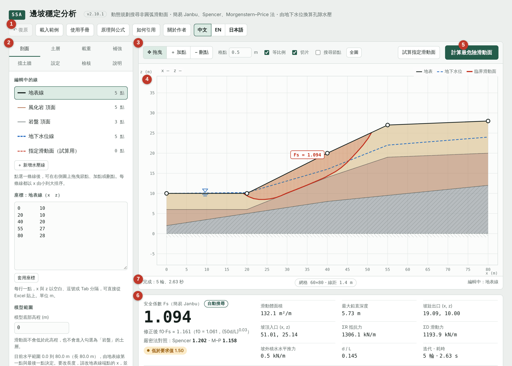
| 編號 | 區域 | 用途 |
|---|---|---|
| 1 | 頂端按鈕 | 復原上一步（Ctrl+Z）、載入範例、本使用手冊、原理與公式、語言切換。 |
| 2 | 分頁 | 剖面、土層、載重、補強、擋土牆、設定、檢核、說明。輸入資料大致依這個順序。 |
| 3 | 工具列 | 在圖上拖曳、加點、刪點，格點間距，顯示切片或搜尋節點，全圖顯示。 |
| 4 | 剖面圖 | 即時顯示地形、土層、水位、載重、補強與滑動面，可以直接用滑鼠編輯。 |
| 5 | 計算按鈕 | 「計算最危險滑動面」做自動搜尋；「試算指定滑動面」只算你指定的那一條。 |
| 6 | 計算結果 | 安全係數、滑動體資訊、補強構件受力、切片明細。 |
| 7 | 狀態列 | 計算進度、提示訊息與搜尋網格設定。 |
座標與單位
- 剖面以 x（水平，m）與 z（高程，m）表示，x 由左往右增加。坡面朝左或朝右都可以，程式會自動判斷。
- 每一條線（地表、土層界面、水位）都以 x 由小到大的點列表示，相鄰兩點以直線相連。
- 預設單位為 kN、kPa、kN/m³，可在「土層」頁改為 tf 系統（第 16 章）。
- 所有力與載重都以「每公尺寬」計。
第一篇
入門：完成第一份檢核報告
以一處道路上邊坡為例。坡高約 12.5 m，表層為 4 至 6 m 厚的崩積層，下方為風化岩與岩盤，坡頂有道路。目標是依水土保持技術規範檢核常時、暴雨與地震三種情境，不足時以土釘補強，並在坡趾設一座擋土牆，最後產出計算書。
第 1 章輸入地表、土層界面與地下水位
剖面由幾條線組成：地表線、各土層的頂面（界面線）與地下水位線。教學案例的資料如下，單位 m。
| 線 | 座標點 (x, z) |
|---|---|
| 地表線 | (0, 10) (10, 10) (35, 22.5) (50, 24) (70, 25) |
| 風化岩頂面 | (0, 6) (15, 7.5) (35, 16) (70, 19) |
| 岩盤頂面 | (0, 2) (35, 9) (70, 12) |
| 地下水位線 | (0, 7) (15, 8.5) (35, 17) (70, 21) |
1.1 方法一：逐條貼上座標
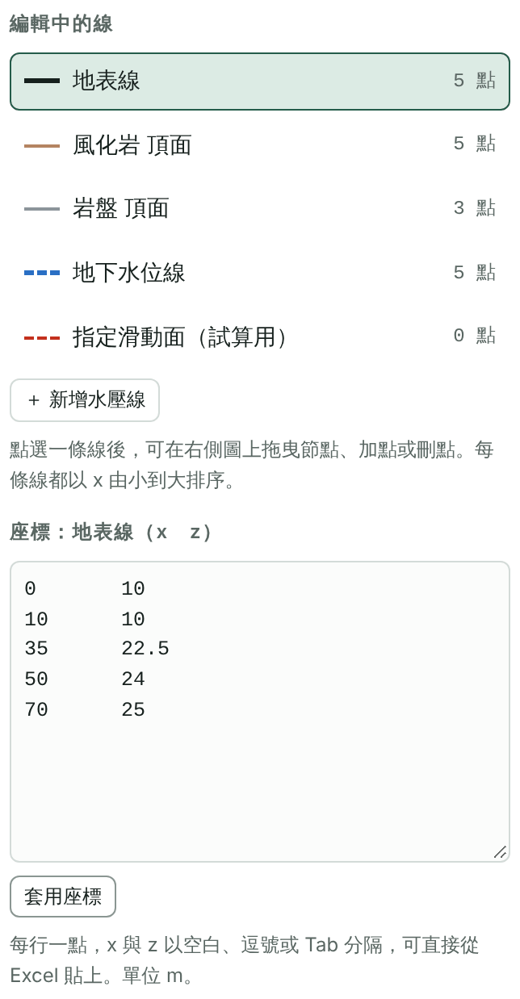
- 點「剖面」分頁，在「編輯中的線」點選地表線。
- 在下方座標欄貼上地表線的點，每行一點，x 與 z 之間用空白、逗號或 Tab 分開。從 Excel 複製兩欄直接貼上也可以。
- 按套用座標，右側圖面立即更新。
- 依序點選風化岩 頂面、岩盤 頂面、地下水位線，重複第 2、3 步。
- 確認「模型範圍」的模型底部高程為 0 m。滑動面不會低於這個高程。
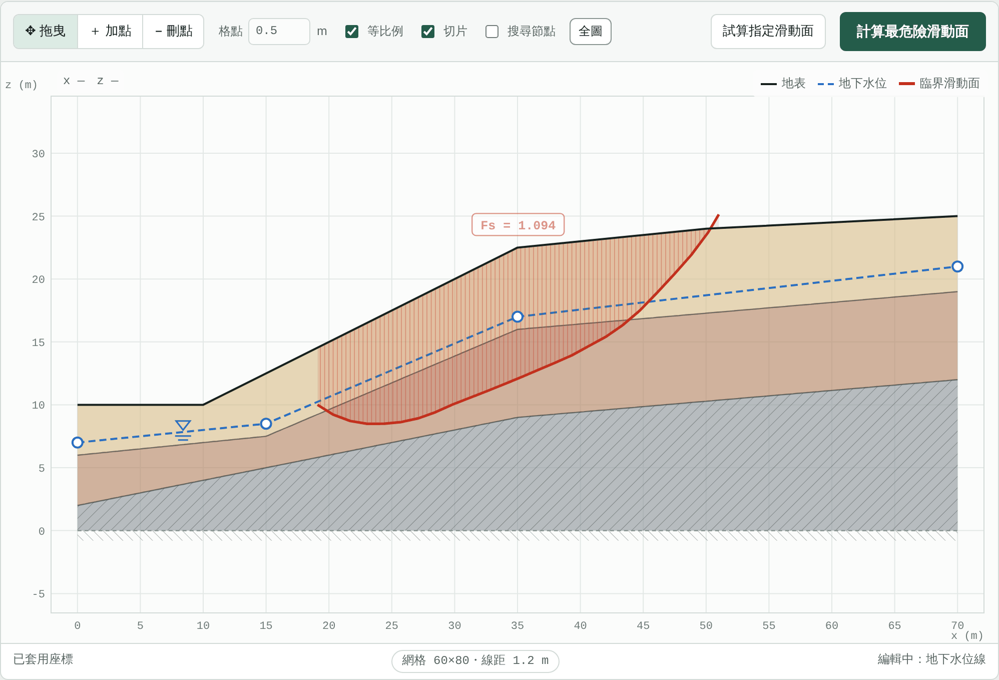
1.2 方法二：匯入 CSV 一次建立
測量或鑽探資料通常已經整理在 Excel 裡，這時用 CSV 匯入最快。CSV 有兩種格式：
- 兩欄（x, z）：匯入到目前選取的那一條線。
- 三欄以上：第 1 欄 x，第 2 欄地表高程，之後各欄依序為第 2、3…層的頂面。欄名含「水」字的欄視為地下水位線。某條線在該 x 沒有資料時留空即可。
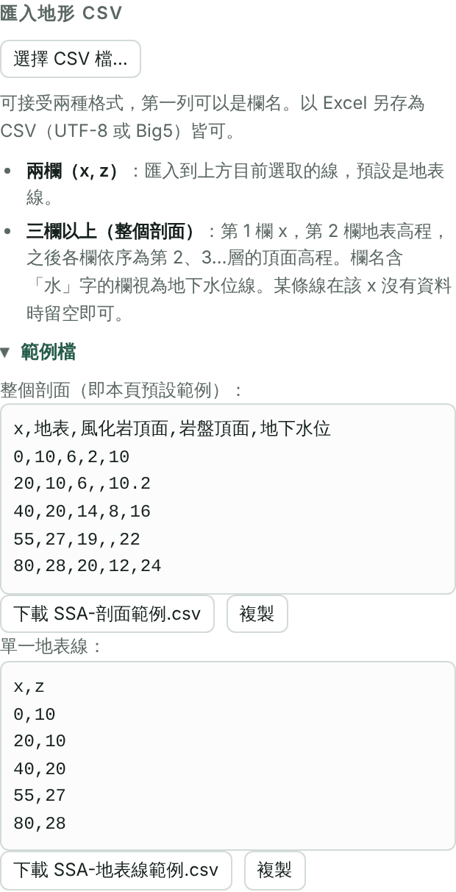
教學案例的 CSV（tutorial-profile.csv）內容如下：
x,地表,風化岩頂面,岩盤頂面,地下水位 0,10,6,2,7 10,10,,, 15,,7.5,,8.5 35,22.5,16,9,17 50,24,,, 70,25,19,12,21
- 在 Excel 依上表整理好資料，另存為 CSV（UTF-8 或 Big5 都可以）。
- 「剖面」頁按選擇 CSV 檔…，選取檔案。
- 狀態列會顯示匯入了幾個點，例如「已匯入地表 5 點、2 條土層界面、地下水位 4 點」。
1.3 在圖上微調
選取一條線後，可以直接在圖上修改：
- 拖曳模式下拖動節點移動位置，位置會對齊「格點」設定的間距（預設 0.5 m，設 0 則不對齊）。
- 加點模式下點擊圖面新增節點；刪點模式下點擊節點刪除。
- 改錯了按左上角復原或 Ctrl+Z。
第 2 章土層參數
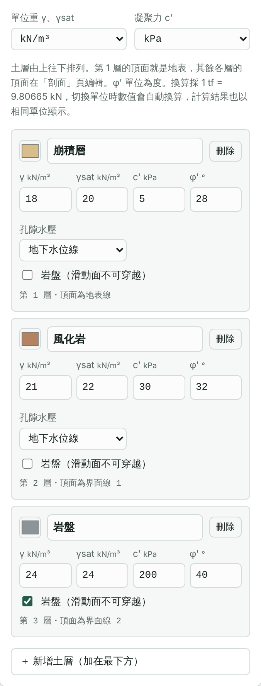
到「土層」頁，依下表輸入各層參數。土層由上往下排列，第 1 層的頂面就是地表。
| 土層 | γ kN/m³ | γsat kN/m³ | c′ kPa | φ′ ° | 岩盤 |
|---|---|---|---|---|---|
| 崩積層 | 18 | 20 | 5 | 28 | |
| 風化岩 | 21 | 22 | 30 | 32 | |
| 岩盤 | 24 | 24 | 200 | 40 | ✓ |
- γ 與 γsat：地下水位以上用 γ，以下用飽和單位重 γsat。
- c′ 與 φ′：有效應力強度參數。
- 孔隙水壓：預設「地下水位線」，也就是由水位換算靜水壓。其他選項見第 12 章。
- 岩盤：勾選後滑動面不會進入這一層，通常用在最下層的堅硬岩盤。
- 土層名稱與顏色可以自訂，名稱會出現在「剖面」頁的線清單與計算書中。
第 3 章坡頂與坡趾載重
教學案例的坡頂有一條道路。車輛載重屬於臨時載重，以均布載重 10 kPa 表示，作用範圍 x = 36 至 44 m。
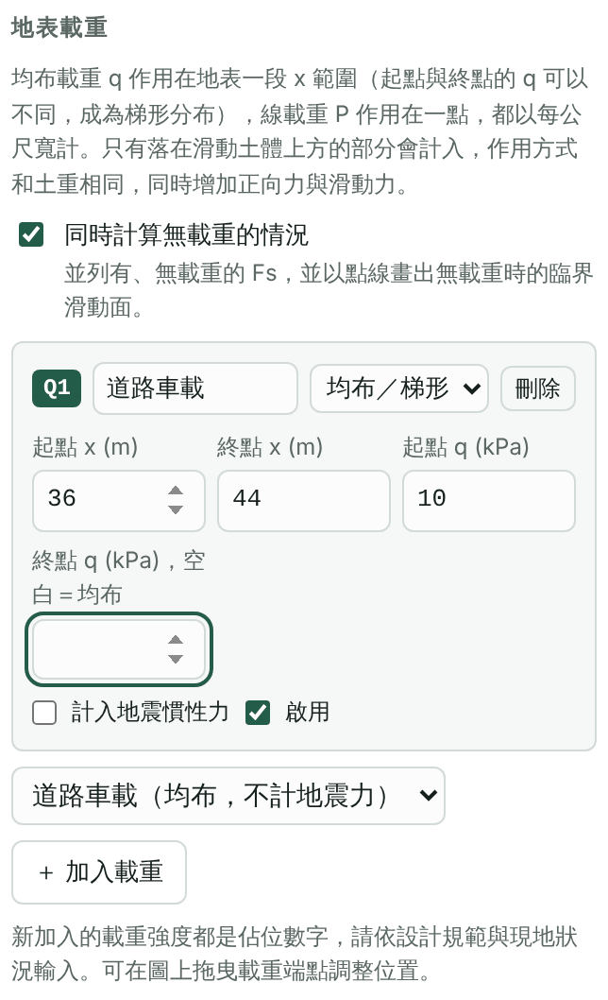
- 到「載重」頁，下拉選單選道路車載（均布，不計地震力），按＋ 加入載重。
- 把起點 x 改為 36、終點 x 改為 44、起點 q 改為 10。終點 q 留空表示均布，填入不同值則成為梯形分布。
- 道路車載是臨時載重，不勾「計入地震慣性力」。建築物、擋土構造物等永久載重則應勾選。
載重也可以在圖上拖曳端點調整位置。新加入的載重強度都是佔位數字，請依設計規範與現地狀況修改。
坡頂與坡趾的差別
- 坡頂（上邊坡）的載重通常會降低安全係數。
- 坡趾（下邊坡）的載重通常會提高安全係數，也就是壓腳效果。但停車、臨時堆料這類可能被移走的載重，不應拿來提高安全係數。
- 勾選頁首的同時計算無載重的情況，結果會並列有、無載重兩個 Fs，便於比較。
- 填土本身有強度，滑動面也可能穿過它，應修改地表線並加入填土層，不要用載重代表。
第 4 章第一次計算與判讀結果
按右上角計算最危險滑動面。程式會在剖面上搜尋安全係數最小的滑動面，一般只要數秒。
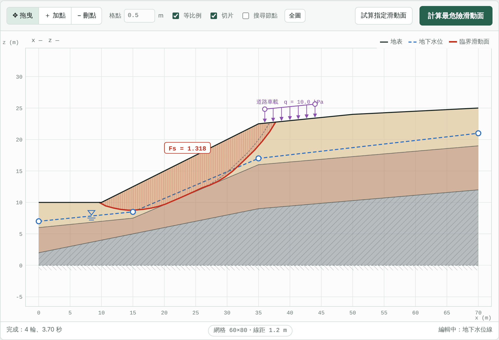
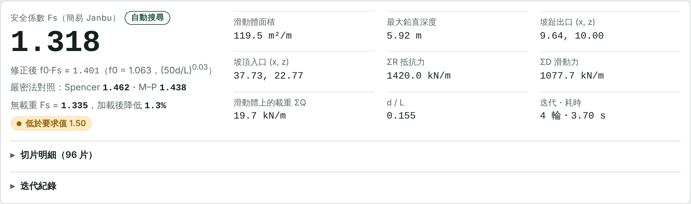
4.1 結果怎麼看
| 項目 | 說明 |
|---|---|
| 安全係數 Fs | 大字顯示的值，本例 1.318。預設以簡易 Janbu 法未修正值判定，與原 SSA 程式相同，較保守。 |
| 修正後 f0·Fs | 簡易 Janbu 法乘上修正係數 f0 的值，僅供參考。若要以此判定，在「設定」頁勾選「以修正後 f0·Fs 判定」。 |
| 嚴密法對照 | 同一條滑動面以 Spencer 法與 Morgenstern–Price 法計算的結果（第 15 章）。 |
| 無載重 Fs | 移除所有載重後的 Fs。本例為 1.335，道路車載使 Fs 降低 1.3%。 |
| 要求值判定 | 與「設定」頁的要求安全係數（預設 1.50）比較。本例「低於要求值」。 |
| 滑動體資訊 | 面積、最大鉛直深度、坡趾出口與坡頂入口座標、抵抗力與滑動力總和。 |
| 切片明細 | 展開後可看每一片的寬度、重量、孔隙水壓、強度參數與力，也可以複製成 CSV。 |
本例常時 Fs = 1.318，低於水土保持技術規範要求的 1.5，需要補強。在繼續之前，建議先存檔（第 8.3 節），本章完成的模型就是範例檔 tutorial-1-slope.json。
第 5 章加入補強措施
本例在坡面打設一排土釘。土釘在滑動面的交點提供拉力，取抗拉、拉拔、面版三者的最小值，再除以水平間距換算為每公尺寬。
5.1 設定計入方式與第一支土釘
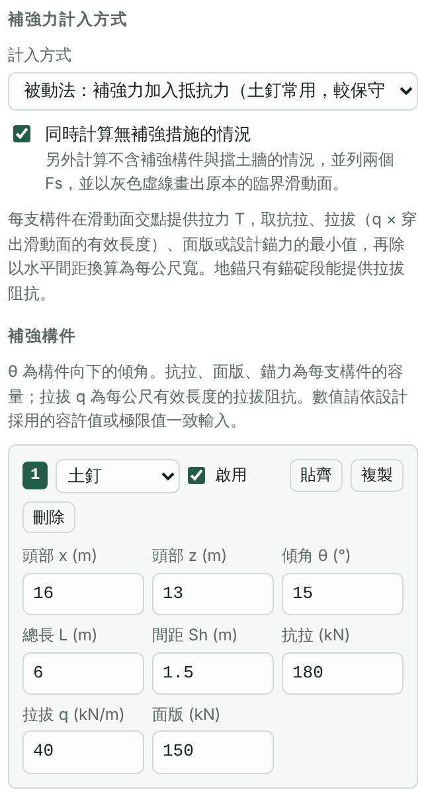
- 到「補強」頁，計入方式選被動法：補強力加入抵抗力。土釘常用被動法，較保守；預力地錨常用主動法。
- 確認已勾選同時計算無補強措施的情況，結果會並列補強前後的 Fs。
- 按＋ 土釘新增一支，把總長 L 改為 6 m。其餘欄位的意義如下表。
| 欄位 | 意義 | 本例 |
|---|---|---|
| 頭部 x、z | 土釘頭部位置，按「貼齊」可貼到地表 | 由整排配置決定 |
| 傾角 θ | 向下的傾角（°） | 15 |
| 總長 L | 土釘長度（m） | 6，之後改 9 |
| 間距 Sh | 垂直剖面方向的水平間距（m） | 1.5 |
| 抗拉 | 每支容許抗拉力（kN） | 180 |
| 拉拔 q | 每公尺有效長度的拉拔阻抗（kN/m） | 40 |
| 面版 | 面版或頭部的容量（kN） | 150 |
5.2 整排配置
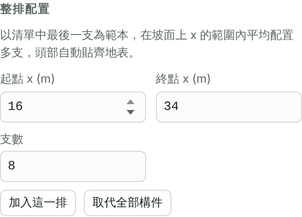
- 在「整排配置」輸入起點 x = 16、終點 x = 34、支數 8。
- 按取代全部構件。程式以清單中最後一支土釘為範本，在這段坡面上平均配置 8 支，頭部自動貼齊地表。
- 按計算最危險滑動面。
「加入這一排」會保留原有構件再加一排，適合多排不同長度的配置。
5.3 試算與調整
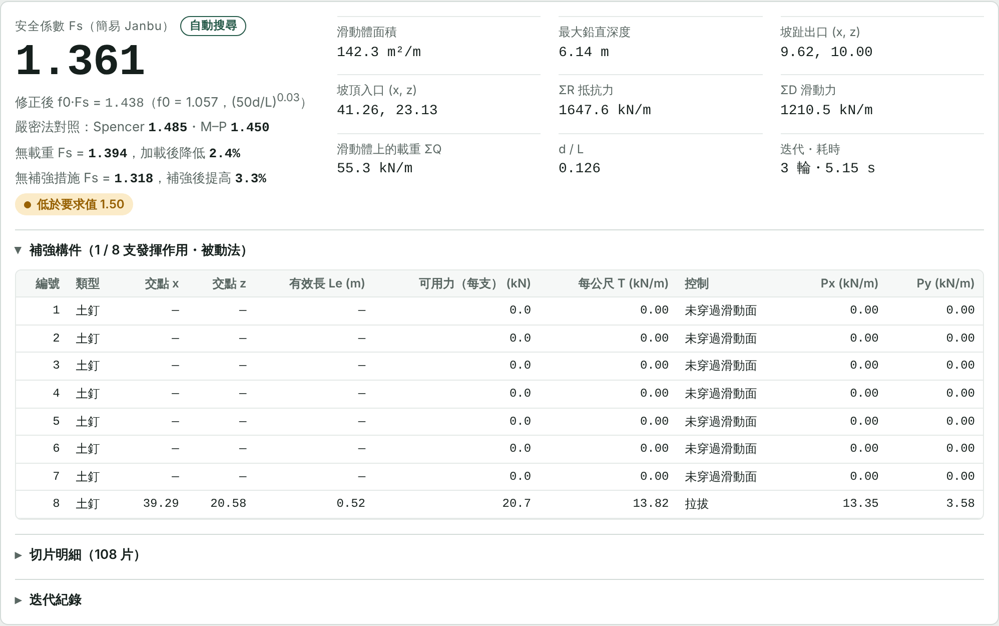
6 m 長的土釘大多只穿過滑動面一小段，拉拔力有限，Fs 只從 1.318 提高到 1.361。表格中的「有效長 Le」是穿出滑動面的長度，「控制」欄說明是抗拉、拉拔或面版控制。
把清單中最後一支土釘的長度改為 9 m，再按一次取代全部構件與計算最危險滑動面：
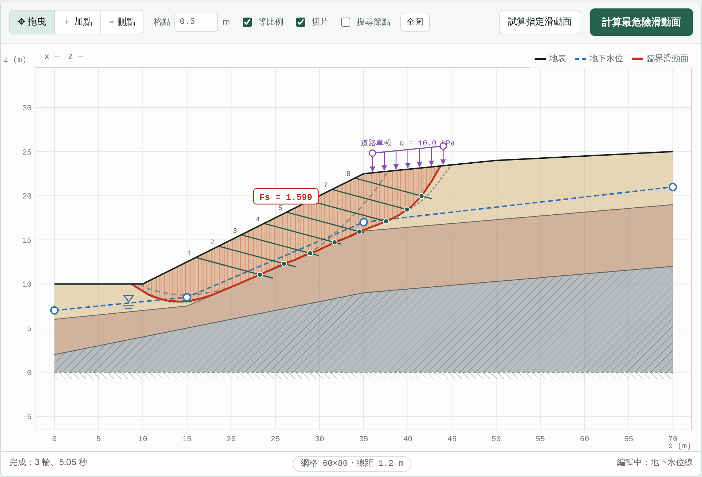
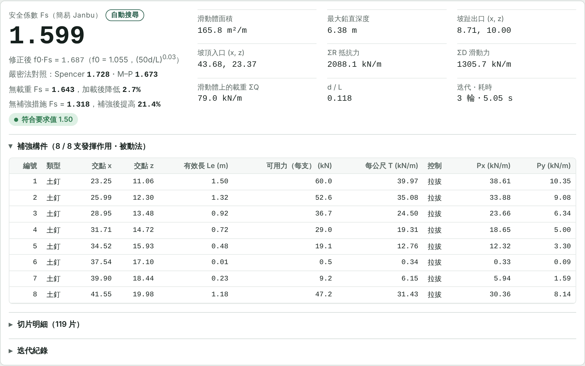
第 6 章常時、暴雨、地震三種情境檢核
第 5 章只檢核了目前條件（常時）。規範還要求檢核暴雨與地震情境，各有不同的要求安全係數。「檢核」頁可以一次設定多個情境，一鍵算完。
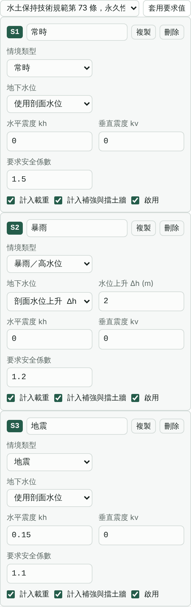
- 到「檢核」頁。上方選單預設為水土保持技術規範第 73 條，永久性，三個情境的要求安全係數分別為 1.5、1.2、1.1。要改用其他規範，選好後按「套用要求值」。
- S2 暴雨：地下水位選「剖面水位上升 Δh」，填入 Δh = 2 m。上升後的水位不會高於地表。
- S3 地震：填入水平震度 kh = 0.15，垂直震度 kv 維持 0。
- 按計算所有情境。每個情境各自搜尋臨界滑動面。
每個情境卡片還可以設定：
- 情境類型：常時、暴雨／高水位、地震。「套用要求值」依類型填入要求安全係數，擋土牆檢核也依類型採用常時或地震時的要求值。
- 地下水位：使用剖面水位、剖面水位上升 Δh、水位達地表、無地下水。
- 計入載重、計入補強與擋土牆：可以分別關閉，檢討載重移除或補強失效的情況。
- 「複製」可以快速建立相似的情境，例如不同 Δh 的敏感度分析。
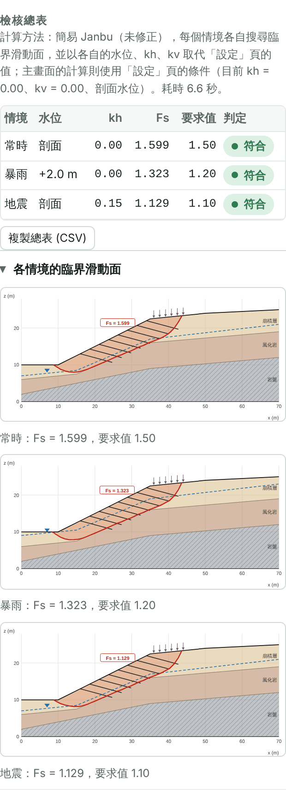
三個情境都符合要求：常時 1.599 ≥ 1.5、暴雨 1.323 ≥ 1.2、地震 1.129 ≥ 1.1。總表可以按「複製總表 (CSV)」貼到 Excel，計算書也會列入這張表與各情境的滑動面圖。完成的模型為 tutorial-2-nails.json。
第 7 章擋土牆外部穩定檢核
假設坡趾要設一座重力式擋土牆，牆後回填成一個平台，作為坡面排水與維護通道。擋土牆在 SSA 裡要做兩種檢核：
- 外部穩定：把牆體當作剛體，檢核滑動、傾倒、偏心（合力位置）與基礎承載力。尺寸一改，結果立即更新。
- 整體穩定：把牆視為不可穿越、計入重量的結構物，搜尋從牆底下或牆後方通過的滑動面。
建議的順序是先調整尺寸通過外部穩定，再確認整體穩定。牆身與底版的配筋等結構設計不在本工具範圍內。
7.1 修改地表線
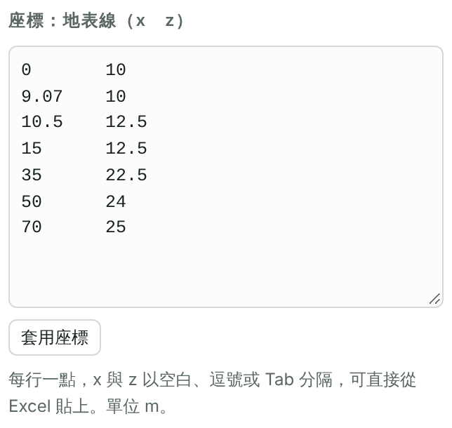
地表線要畫到牆頂並包含牆後的回填平台。到「剖面」頁選地表線，把座標改為：
0 10 9.07 10 10.5 12.5 15 12.5 35 22.5 50 24 70 25
(9.07, 10) 到 (10.5, 12.5) 是牆的前坡面，(10.5, 12.5) 到 (15, 12.5) 是牆頂與牆後平台。牆前道路高程 10 m，牆底設在 9 m，埋入 1 m。
7.2 選擇規範並加入擋土牆
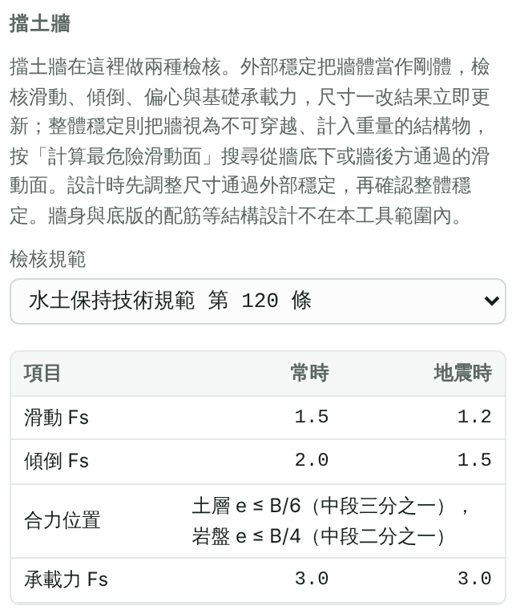
到「擋土牆」頁。檢核規範預設為水土保持技術規範第 120 條，也可以改選建築物基礎構造設計規範或公路橋梁設計規範，下方表格會列出各項要求值。
| 規範 | 滑動 | 傾倒 | 合力位置 | 承載力 |
|---|---|---|---|---|
| 水土保持技術規範第 120 條 | 1.5／1.2 | 2.0／1.5 | 土層 e ≤ B/6，岩盤 e ≤ B/4 | 3.0／3.0 |
| 建築物基礎構造設計規範 7.4 節 | 1.5／1.2 | 2.0／1.5 | 合力在底面內 | 3.0／2.0 |
| 公路橋梁設計規範 6.2.8 節 | 1.5／1.2 | 2.0／1.5 | 合力在底面內 | 3.0／2.0 |
表中斜線前為常時，後為地震時。使用前請以最新版規範條文確認。
按＋ 重力式加入一座擋土牆，再依下一節輸入尺寸。三種型式的按鈕分別是重力式、懸臂式、扶壁式，加入後也可以在卡片的型式選單切換。
7.3 輸入尺寸
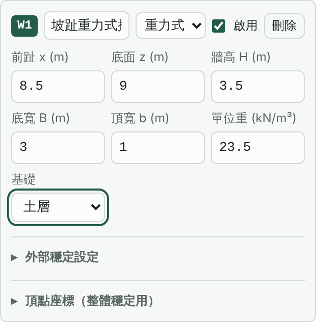
| 欄位 | 意義 | 本例 |
|---|---|---|
| 前趾 x | 牆底前緣（靠坡外側）的 x | 8.5 |
| 底面 z | 牆底高程 | 9 |
| 牆高 H | 由牆底到牆頂 | 3.5 |
| 底寬 B | 牆底寬度 | 3.0 |
| 頂寬 b | 牆頂寬度（重力式） | 1.0 |
| 單位重 | 牆體單位重 | 23.5 kN/m³ |
| 基礎 | 土層或岩盤，影響合力位置的容許範圍 | 土層 |
重力式擋土牆的背面為鉛直，前面為斜面。懸臂式與扶壁式另有底版厚、趾長、牆身頂厚與底厚，扶壁式再加扶壁間距與厚度。牆的方向依坡面自動判斷，前趾永遠在坡外側。
7.4 判讀檢核結果
尺寸輸入後，下方的「外部穩定檢核」立即列出各情境的結果。各欄就是「檢核」頁啟用的情境，水位、震度與載重都跟著情境改變。
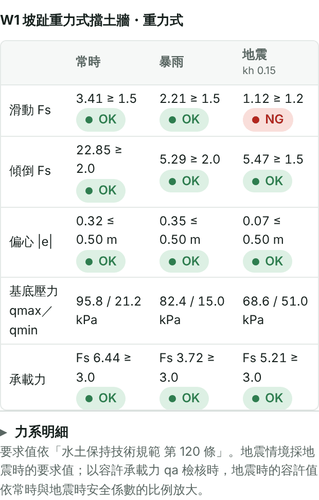
常時與暴雨都通過，但地震時的抗滑動安全係數 1.12 不足。可行的對策有加大底寬、加設剪力榫，或計入牆前被動土壓。本例牆前道路下方有 1 m 埋入深度，且道路路基會長期存在，因此計入牆前被動土壓：
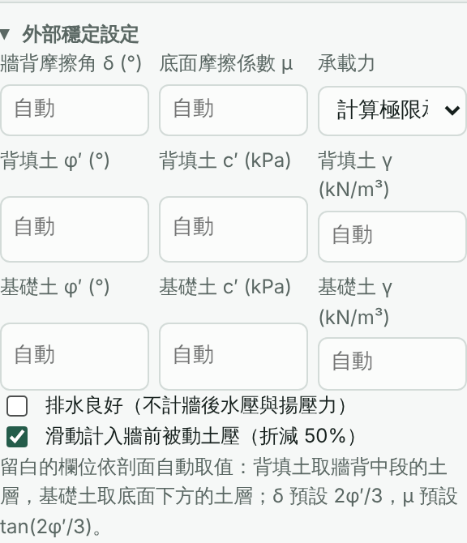
- 展開卡片中的外部穩定設定。
- 勾選滑動計入牆前被動土壓（折減 50%）。
這裡的其他選項：
- 牆背摩擦角 δ：重力式擋土牆用，留白時取 2φ′/3。
- 底面摩擦係數 μ：留白時取 tan(2φ′/3)，φ′ 為基礎土的摩擦角。有試驗資料時可直接輸入。
- 承載力：預設以 Meyerhof 公式計算極限承載力，也可以改為輸入容許承載力 qa。
- 背填土、基礎土的 φ′、c′、γ：留白時自動取剖面中牆背中段與牆底下方的土層。牆後使用級配良好的回填料時，可在這裡指定。
- 排水良好：勾選後不計牆後水壓與底面揚壓力。
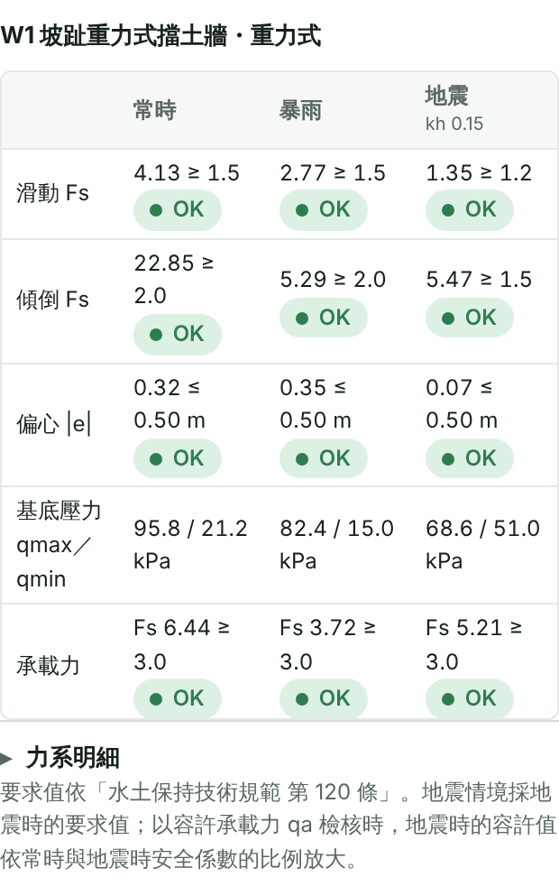
展開「力系明細」可以看到背填土與基礎土的參數、土壓係數、土壓力合力與作用高度、水壓與揚壓力、重量、力矩與極限承載力，方便與手算核對。開著「擋土牆」頁時，剖面圖上會畫出牆重 W、土壓力 Pa、底面中間三分之一與合力位置。
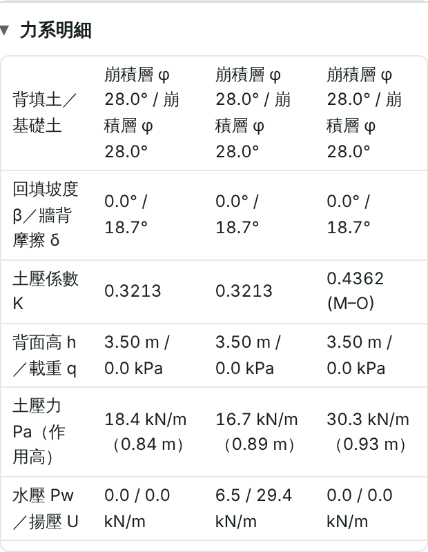
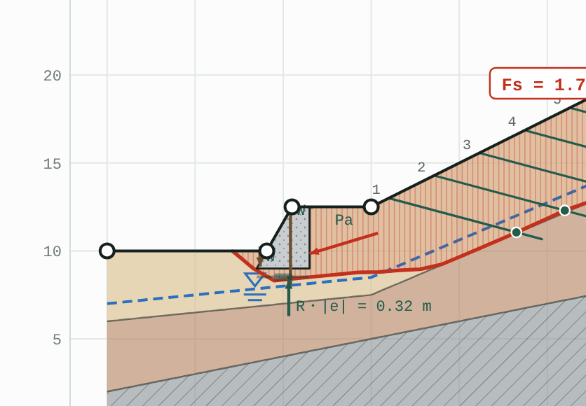
7.5 確認整體穩定
外部穩定通過後，按計算最危險滑動面，再到「檢核」頁按計算所有情境。這時擋土牆會以結構物的形式計入，滑動面只能從牆底下或牆後方通過。
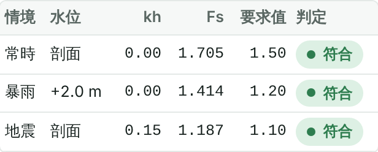
擋土牆提供的壓腳效果讓三個情境的 Fs 都再提高一些。完成的模型為 tutorial-3-wall.json。
第 8 章產出檢核報告與存檔
8.1 填寫計算書資訊
- 先確認主畫面與「檢核」頁都是最新的計算結果。模型改過之後，結果區會標示「請重新計算」。
- 在「檢核」頁下方的計算書輸出填入計算書標題、案名、分析者與備註。
- 按下載 Word (.docx)，或按列印／存成 PDF，在列印視窗選「另存為 PDF」。
Word 檔可以直接編修，例如加上公司格式或補充說明。
8.2 計算書的內容
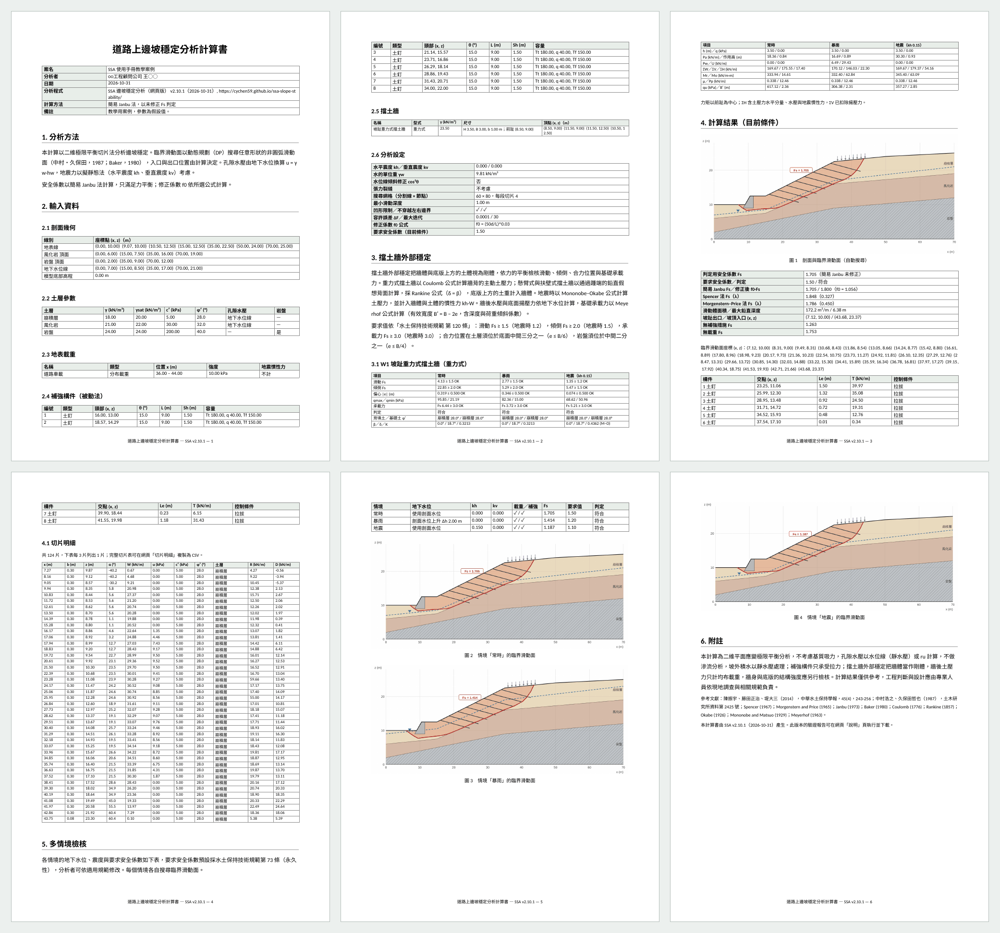
| 章節 | 內容 |
|---|---|
| 封面資訊 | 案名、分析者、日期、程式版本與網址、計算方法。 |
| 1. 分析方法 | 使用的方法、孔隙水壓與地震力的處理方式。 |
| 2. 輸入資料 | 剖面幾何、土層參數、載重、補強構件、擋土牆、分析設定。 |
| 3. 擋土牆外部穩定 | 有擋土牆時才出現。方法、要求值與各情境的檢核表、力系明細。 |
| 4. 計算結果 | 剖面圖與臨界滑動面、安全係數、補強構件受力、切片明細。 |
| 5. 多情境檢核 | 有情境計算結果時才出現。總表與各情境的滑動面圖。 |
| 6. 附註 | 分析限制、參考文獻與程式版本。 |
章節編號會依內容自動調整。教學案例的完整計算書可以下載 Word 版 或 PDF 版 參考。
8.3 存檔與接續分析
網頁關閉後模型不會保留，請記得存檔。
- 到「設定」頁最下方的模型存取，按儲存模型（JSON 檔）。檔案包含地形、土層、水位、載重、補強、擋土牆、情境與所有設定。
- 下次開啟網頁，按匯入模型…選擇這個檔案，就能接續分析。
也可以展開「以文字方式複製或貼上 JSON」，把模型內容貼到電子郵件或筆記中。
第二篇
進階：依情況選用的功能
每一章開頭的「什麼時候用」說明適用的情況。除了特別註明，各章都以入門篇第 4 章的模型 tutorial-1-slope.json（無補強）為起點，到「設定」頁按「匯入模型…」載入即可。
第 9 章已知滑動面位置：控制點
什麼時候用
已經崩塌或正在滑動的邊坡，常有現地資料指出滑動面的位置，例如傾斜管、TDR 量到的剪動深度，鑽探岩心的剪裂帶，坡頂的崩崖與坡趾的隆起。這時自動搜尋出的「最危險滑動面」不一定是實際在動的那一條，應該讓搜尋的滑動面通過這些已知位置，再據以設計補強或反算參數。
以教學案例為例，假設坡面中段 x = 28 m 的傾斜管 BH-1 在地表下 8 m 量到明顯的剪動。
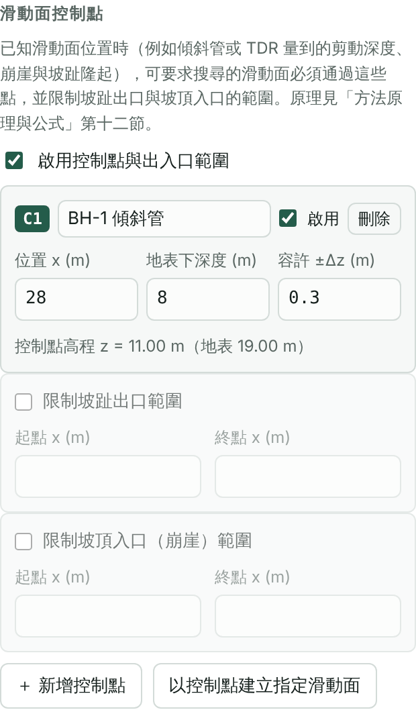
- 到「剖面」頁的滑動面控制點，勾選啟用控制點與出入口範圍。
- 按＋ 新增控制點，名稱填孔號，位置 x = 28，地表下深度 = 8，容許 ±Δz = 0.3 m。程式會換算並顯示控制點高程 z = 11 m。
- 按計算最危險滑動面。搜尋只接受在 x = 28 m 處通過 z = 11 ± 0.3 m 的滑動面。
另外兩個選項可以限制滑動面的兩端：
- 限制坡趾出口範圍：坡趾隆起、湧水或擋土牆變形的位置。
- 限制坡頂入口（崩崖）範圍：坡頂張裂縫或崩崖的位置。
控制點可以有多個，例如沿主測線的幾支傾斜管。按以控制點建立指定滑動面會把控制點與出入口連成一條滑動面，放到「指定滑動面」，作為第 10、11 章的起點。
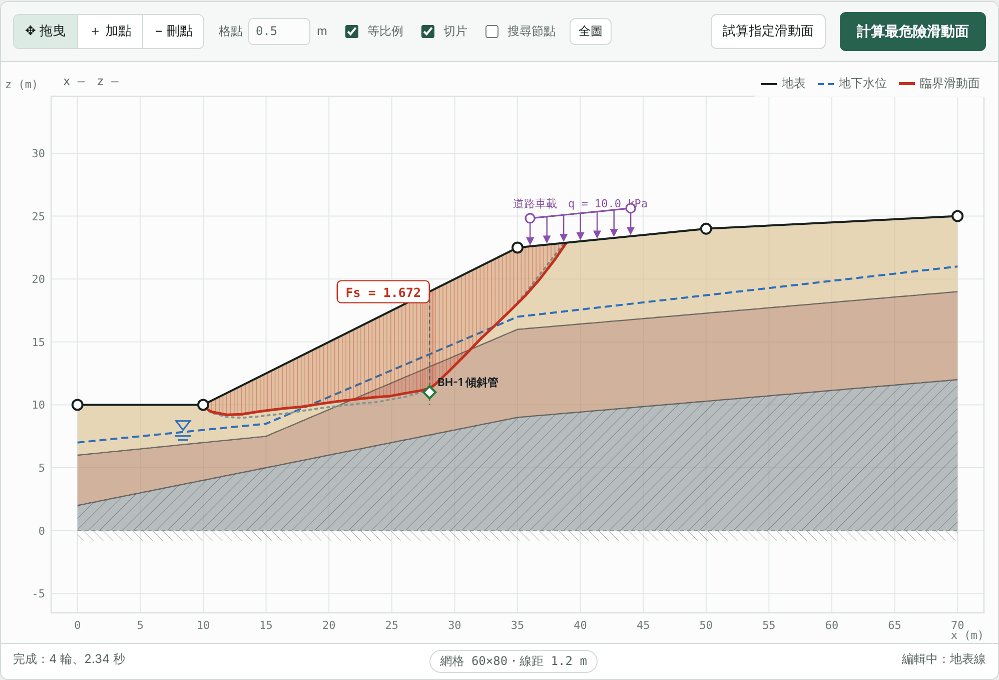
本例通過控制點的滑動面 Fs = 1.672，比自由搜尋的 1.318 高很多。如果這處邊坡確實沿著 8 m 深的滑動面在動，代表現地的強度比假設的低，或水位比假設的高。這時應以這條滑動面做反算（第 11 章），用反算得到的參數設計補強，而不是直接採用自由搜尋的結果。
第 10 章指定滑動面與圓弧
什麼時候用
- 審查舊報告或其他軟體的計算，要以同一條滑動面重算比對。
- 崩塌後由測量得到實際的滑動面，要計算它的安全係數或做反算。
- 只想知道某一條特定滑動面的 Fs，不做搜尋。
指定滑動面放在「剖面」頁線清單中的指定滑動面（試算用），建立的方式有五種：
- 在座標欄貼上點位，按「套用座標」。
- 在圖上用「加點」模式逐點點出。
- 計算後按複製目前的臨界滑動面，再修改。
- 輸入圓心與半徑產生圓弧（本章示範）。
- 由控制點建立（第 9 章）。
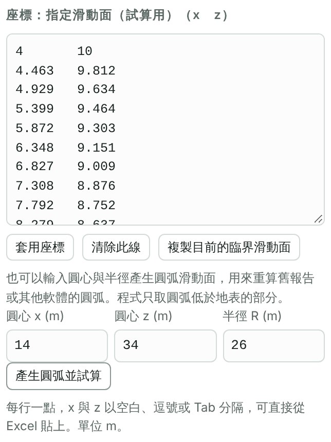
假設舊報告使用圓心 (14, 34)、半徑 26 m 的圓弧：
- 在「剖面」頁點選指定滑動面（試算用）。
- 在座標欄下方輸入圓心 x = 14、圓心 z = 34、半徑 R = 26。
- 按產生圓弧並試算。程式只取圓弧低於地表的部分，轉成點列放入座標欄，並立即試算。
之後修改其他條件，按工具列的試算指定滑動面即可重算這條圓弧。計算書會註明圓心與半徑。
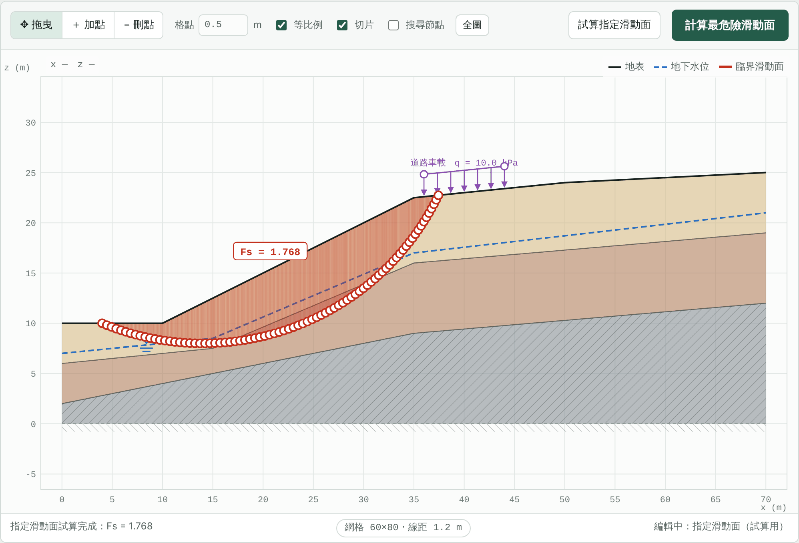
第 11 章反算土壤參數
什麼時候用
邊坡已經崩塌或正在滑動時，可以假設崩塌當時的 Fs 約等於 1.0，反求土層的強度參數。反算得到的參數反映現地的實際狀態，常比試驗值更適合用來設計整治工程。
假設教學案例在一場豪雨後沿著原本的臨界滑動面崩塌，當時的地下水位約比剖面水位高 2 m。
- 按計算最危險滑動面，到「剖面」頁點選指定滑動面，按複製目前的臨界滑動面。實務上這裡應改用測量或控制點得到的實際滑動面。
- 把地下水位線改為崩塌當時的水位：(0, 9) (15, 10.5) (35, 19) (70, 23)。
- 按試算指定滑動面，本例 Fs = 1.069。
- 到「設定」頁的反算分析，反算土層選「自動」（取滑動面通過最長的土層），反算參數選摩擦角 φ′（c′ 固定），目標 Fs = 1。
- 按開始反算。
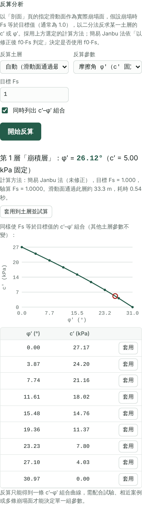
結果顯示崩積層 φ′ = 26.12°（c′ = 5 kPa 固定）時 Fs 恰為 1.000。按套用到土層並試算可以把這個值寫回「土層」頁。
勾選「同時列出 c′–φ′ 組合」時，程式會畫出所有使 Fs = 1 的 c′ 與 φ′ 組合。一條滑動面只能決定一條曲線，無法同時定出 c′ 與 φ′，需要：
- 依試驗、相鄰案例或經驗先固定其中一個，例如崩積層的 c′ 取很小的值；
- 或用兩個以上的崩塌面（不同時間、不同斷面）交會決定。
第 12 章分層水壓線與孔隙水壓比 ru
什麼時候用
- 分層水壓線：不同地層有不同的水頭，例如上方崩積層是一般地下水，下方風化岩或砂礫層是受壓含水層，鑽孔水位計量到的水頭比地下水位高，甚至在坡趾自流湧出。
- 孔隙水壓比 ru：沒有地下水位資料，或填土、廢土堆置場等依規範以 ru 表示孔隙水壓的情況。
- 不計：確定乾燥或排水良好的地層。
12.1 分層水壓線
假設教學案例在 BH-2 鑽孔的風化岩中量到受壓水頭，接近地表，坡趾處的水頭甚至高於地表。
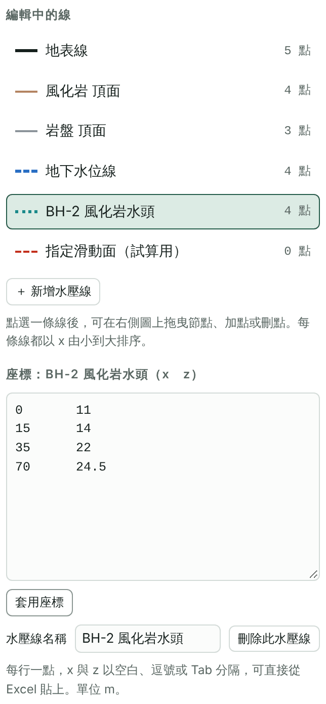
- 「剖面」頁按＋ 新增水壓線。新的水壓線先複製地下水位線，並成為目前編輯的線。
- 在座標欄貼上 (0, 11) (15, 14) (35, 22) (70, 24.5)，按套用座標。
- 在「水壓線名稱」填入「BH-2 風化岩水頭」。
- 到「土層」頁，把風化岩的孔隙水壓選為「BH-2 風化岩水頭」。
- 按計算最危險滑動面。
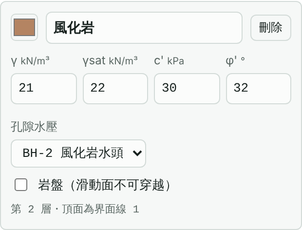
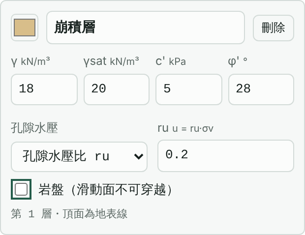
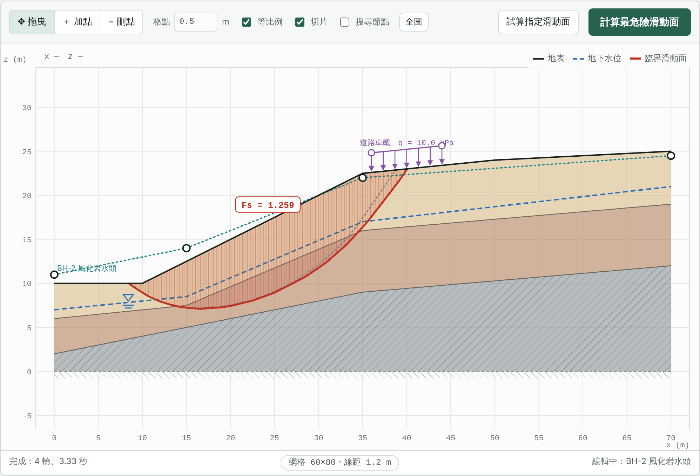
風化岩的孔隙水壓變大後，臨界滑動面改為切入風化岩，最大深度由 5.9 m 變為 8.6 m。每一層使用哪一種孔隙水壓，計算書的土層參數表都會列出。
12.2 孔隙水壓比 ru
選擇「孔隙水壓比 ru」後填入數值，該層的孔隙水壓為 u = ru·σv，σv 為滑動面以上土柱的總應力。ru 常用 0.1 至 0.5，依規範或經驗選定。
第 13 章坡外積水與張力裂縫
什麼時候用
- 坡外積水：河岸、水庫、滯洪池邊坡，或坡趾排水不良而積水。外側的水重與水壓對穩定有利，水位驟降時則可能不利。
- 張力裂縫：坡頂已有張裂縫，或 c′ 較大的黏性土在坡頂可能開裂。裂縫深度內的土不提供抗剪強度，裂縫充水時還會產生水平推力。
13.1 坡外積水
不需要特別的設定。只要把地下水位線畫到地表以上，高出地表的部分就自動視為坡外積水，圖上以淺藍色表示。積水的重量作用在切片頂面，斜坡面上的水壓水平分量抵抗滑動，計算結果另列「坡外積水水平推力」。
本例假設坡趾前方為河道，水位 13 m，比坡趾道路高 3 m：地下水位線改為 (0, 13) (16, 13) (35, 17) (70, 21)。
13.2 張力裂縫
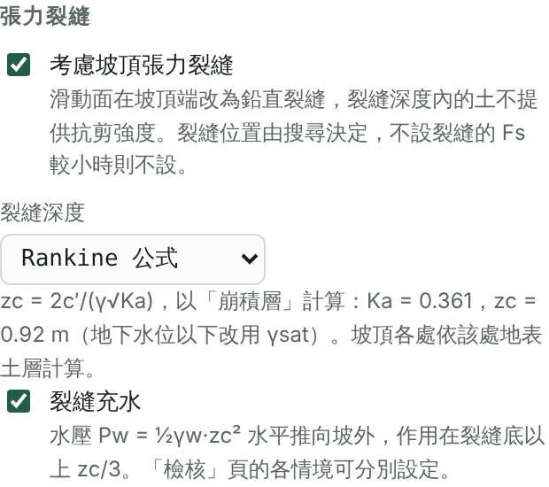
- 到「設定」頁，勾選考慮坡頂張力裂縫。
- 裂縫深度選「Rankine 公式」時，以 zc = 2c′/(γ√Ka) 依坡頂地表的土層計算，下方會顯示算出的深度；也可以選「指定深度」直接輸入。
- 勾選裂縫充水時，水壓 Pw = ½γwzc² 水平推向坡外。
裂縫的位置由搜尋決定，若不設裂縫的 Fs 較小，程式就不設裂縫。「檢核」頁的每個情境可以分別設定裂縫是否充水，例如只有暴雨情境充水。
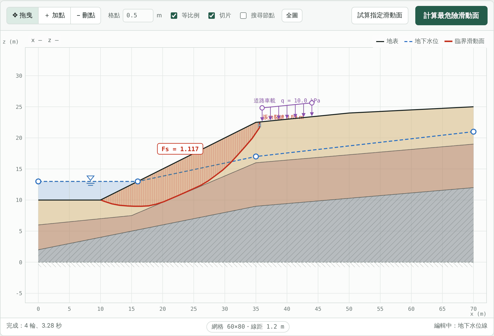
第 14 章抑止樁、微型樁與地工合成材
什麼時候用
- 抑止樁：深層地滑，土釘與地錨的長度或錨碇力不足，需要以鋼管樁的抗剪與抗彎抵抗滑動。
- 微型樁：施工空間有限的道路邊坡，以小口徑樁群同時提供軸力與剪力。
- 地工合成材：加勁填土邊坡或加勁擋土牆，以地工格網或織物分層補強。
這三種構件與土釘、地錨一樣在「補強」頁加入，抵抗力一律計入抵抗側（被動）。
14.1 抑止樁
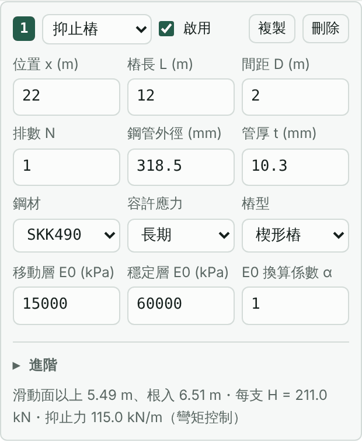
- 「補強」頁按＋ 抑止樁，位置 x = 22、樁長 L = 12 m、間距 D = 2 m、排數 N = 1。
- 鋼管外徑、管厚、鋼材與容許應力（長期或短期）依設計選定，預設為 φ318.5×10.3 mm、SKK490、長期。
- 樁型：楔形樁（くさび杭）用於滑動面下方有地盤反力的一般情況；懸臂樁（抑え杭）用於下坡側沒有地盤反力的情況。
- 移動層與穩定層的變形係數 E0 用來計算水平地盤反力係數，展開「進階」可設定其他參數。
- 按計算最危險滑動面。結果中每支樁會列出滑動面以上長度、根入長度、可承受的水平荷重與控制條件。
14.2 抑止樁設計
「補強」頁的抑止樁設計依日本地すべり防止技術指針，在無補強的臨界滑動面上求使 Fs 達到計畫安全率的必要抑止力 Pr，換算每支樁的設計荷重，再檢核彎曲應力、剪應力、根入長度與地盤降伏。
- 先按計算最危險滑動面。
- 計畫安全率 PFs 填 1.5，按計算必要抑止力與樁體檢核。
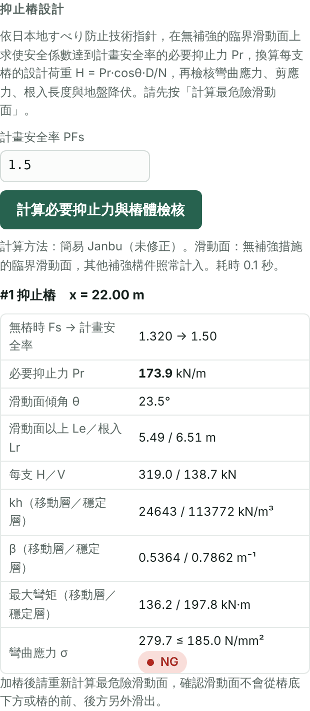
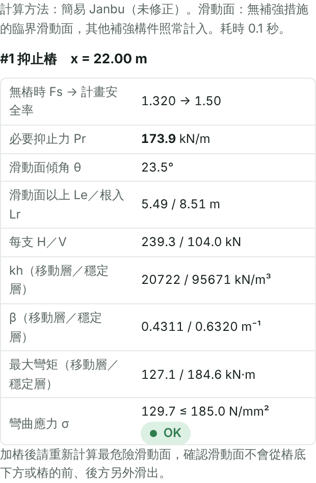
第一次設計的必要抑止力 Pr = 173.9 kN/m，每支樁 H = 319 kN，彎曲應力 279.7 N/mm² 超過容許的 185 N/mm²。把鋼管改為 φ406.4×12.7 mm、間距改為 1.5 m 後，彎曲應力降為 129.7 N/mm²，但根入長度 6.51 m 小於需要的 7.01 m；再把樁長加到 14 m，全部檢核通過。
14.3 微型樁與地工合成材
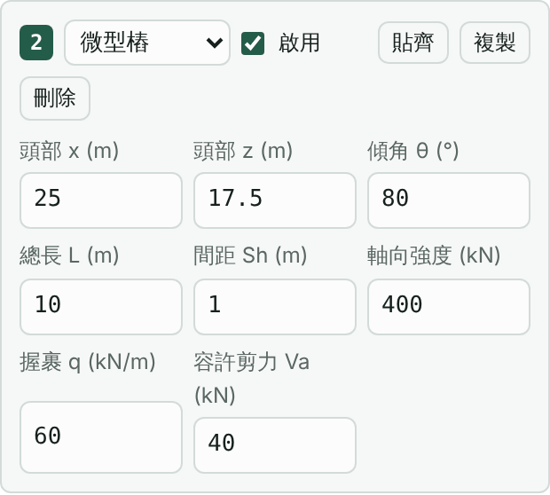
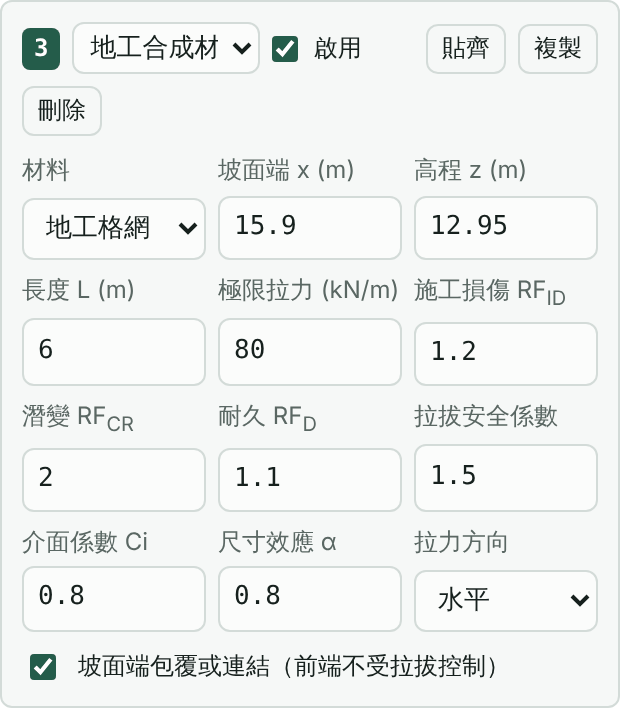
- 微型樁：軸力取握裹 q 乘上穿出滑動面的長度與軸向強度的較小值，沿樁軸作用；容許剪力 Va 垂直樁軸。兩者都取抵抗滑動的方向。傾角 θ 小於 90° 表示向坡內傾斜。
- 地工合成材：容許拉力 Ta = Tult/(RFID·RFCR·RFD)，再與滑動面兩側的拉拔阻抗比較取小值。拉力方向可選水平或沿滑動面。勾選「坡面端包覆或連結」時，前端不受拉拔控制。多層配置可用「整排配置」或「複製」建立。
第 15 章計算方法與搜尋設定
什麼時候用
- 規範或審查要求使用同時滿足力與力矩平衡的嚴密法。
- 剖面很長、土層很薄，或計算結果看起來不合理，需要調整搜尋網格。
- 要排除過淺的表層滑動，或檢討淺層崩塌。
15.1 計算方法
| 方法 | 平衡條件 | 適用 |
|---|---|---|
| 簡易 Janbu 法 | 力平衡 | 原 SSA 程式的方法，計算快，未修正值偏保守。可乘修正係數 f0。 |
| Spencer 法 | 力與力矩 | 切片間力的方向固定（f(x) = 1）。 |
| Morgenstern–Price 法 | 力與力矩 | 切片間力的方向以半正弦函數分布。 |
不論選哪一種，DP 都先以簡易 Janbu 法找出臨界滑動面。選嚴密法時，勾選嚴密法搜尋後局部最佳化滑動面，程式會再移動滑動面的頂點與兩端，使所選方法的 Fs 最小。三種方法的結果都會列在計算結果中。
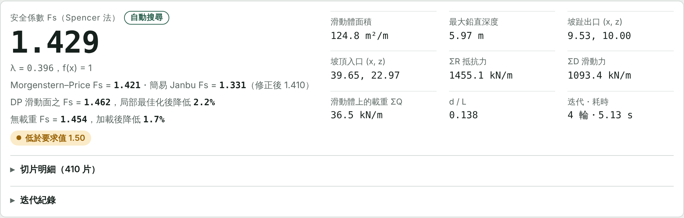
修正係數 f0
簡易 Janbu 法忽略切片間剪力，結果通常偏低。修正係數 f0 有兩種公式可選：f0 = (50d/L)0.03（土木研究所資料 1987）與 Janbu 修正曲線。預設以未修正值判定，與原 SSA 程式相同；勾選以修正後 f0·Fs 判定才會改用修正值。嚴密法不需要 f0。
15.2 搜尋網格
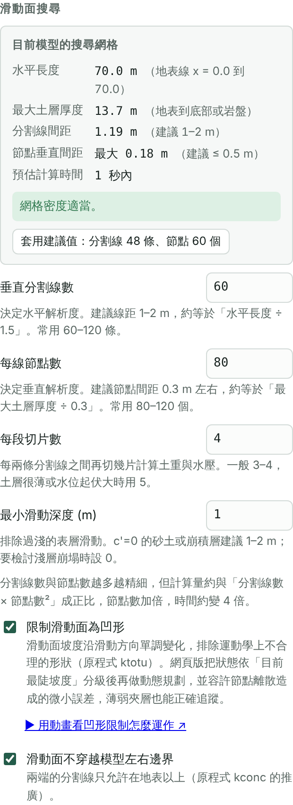
DP 在剖面上畫一組垂直分割線，每條線上放一組節點，滑動面就是從第一條線走到最後一條線、每條線選一點連成的折線。
| 設定 | 建議 |
|---|---|
| 垂直分割線數 | 線距 1 至 2 m，約等於水平長度 ÷ 1.5，常用 60 至 120。 |
| 每線節點數 | 節點間距約 0.3 m，約等於最大土層厚度 ÷ 0.3，常用 80 至 120。 |
| 每段切片數 | 一般 3 至 4，土層很薄或水位起伏大時用 5。 |
| 最小滑動深度 | c′ = 0 的砂土或崩積層建議 1 至 2 m；檢討淺層崩塌時設 0。 |
上方的「目前模型的搜尋網格」會依剖面估算線距、節點間距與計算時間，並提供套用建議值按鈕。點狀態列中間的「網格」按鈕也會跳到這裡。計算量約與「分割線數 × 節點數²」成正比，節點數加倍，時間約變 4 倍。
- 限制滑動面為凹形：排除運動學上不合理的形狀，建議保持勾選。
- 滑動面不穿越模型左右邊界：兩端的分割線只允許在地表以上，避免滑動面從模型邊界穿出。
- 工具列勾選搜尋節點可以在圖上看到節點位置。
15.3 收斂與判定
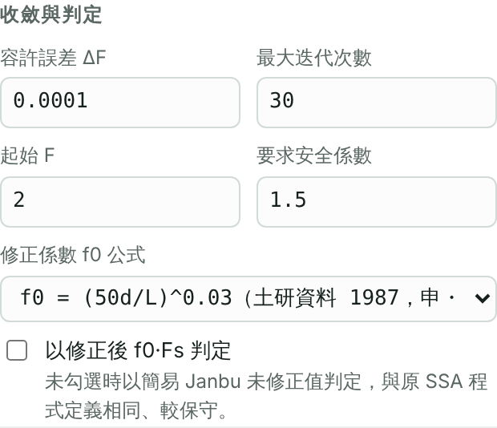
容許誤差 ΔF、最大迭代次數與起始 F 一般不需要更動。要求安全係數是主畫面計算的判定標準，多情境檢核則各自使用「檢核」頁的要求值。
第 16 章單位、存檔、驗證報告與版本
16.1 單位
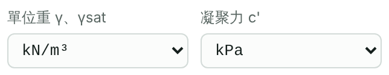
「土層」頁上方可以分別選擇單位重（kN/m³ 或 tf/m³）與凝聚力、應力（kPa 或 tf/m²）的單位。切換時已輸入的數值會自動換算，計算結果與計算書也以相同單位顯示。換算採 1 tf = 9.80665 kN。
16.2 存檔與交換
- JSON 模型檔：「設定」頁的「儲存模型」與「匯入模型…」，包含所有輸入與設定（第 8.3 節）。
- CSV：地形可由 CSV 匯入（第 1.2 節）；切片明細與多情境總表可以複製為 CSV。
- 計算書：Word 或 PDF（第 8 章）。
- 復原：Ctrl+Z 或左上角「復原」可以回到上一步。
16.3 驗證報告
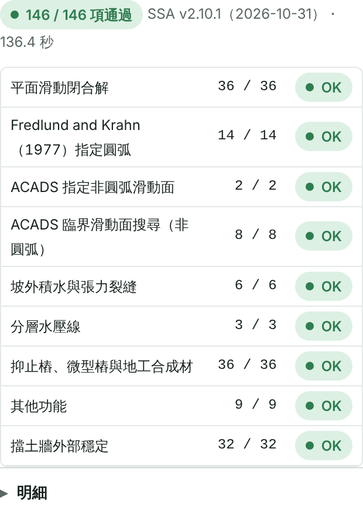
「說明」頁的執行驗證會以目前版本的計算核心，在您的瀏覽器中重算全部驗證考題，包含閉合解、Fredlund and Krahn、ACADS 標準題、坡外積水與張力裂縫、分層水壓、補強構件、鋼管杭計算例與擋土牆外部穩定，列出參考值、本工具的結果、差異與是否通過，約需 2 分鐘。結果可以下載 Word 或列印為 PDF，作為送審時的程式驗證文件。v2.10.1 共 146 項檢核全部通過。
16.4 版本與語言
網頁標題旁、計算書與存檔都標示程式版本號。「說明」頁的版本紀錄列出各版的修改內容。本手冊封面註明對應的程式版本，程式有功能更新時，手冊也會同步修訂。
右上角可以切換中文、English、日本語，計算書也會以目前的語言產生。
附錄常見問題與參考表
A. 常見問題
- 按了計算，沒有找到滑動面。
- 先看狀態列的訊息。常見原因有：地表線少於 2 點；模型底部高程高於地表的某一段；最小滑動深度太大；控制點或出入口範圍彼此矛盾。關閉控制點、把最小滑動深度設為 0 試試看。
- 臨界滑動面出現在很奇怪的位置，例如模型邊緣。
- 確認勾選了「滑動面不穿越模型左右邊界」，並把剖面兩端延伸到離坡頂、坡趾足夠遠的地方（一般至少一倍坡高）。
- Fs 跟其他軟體差很多。
- 先以同一條滑動面比對（第 10 章），再逐項檢查計算方法、孔隙水壓、單位重的使用（水位上下）、f0 修正與載重是否計入地震力。
- 補強後 Fs 沒有提高。
- 看計算結果中補強構件的表格。若顯示「未穿過臨界滑動面」，代表滑動面換到構件範圍以外，需要加長構件或擴大配置範圍。
- 擋土牆頁顯示「只計入整體穩定」。
- 以頂點座標自訂形狀的擋土牆無法做外部穩定檢核。在卡片中輸入尺寸，就會改回參數式斷面。
- 情境顯示「請輸入 Δh」或「請輸入 kh」。
- 暴雨的水位上升量與地震的水平震度須依案例填入，程式不預設（第 6 章）。
- 關掉網頁後模型不見了。
- SSA 不會把資料存在伺服器，請用「儲存模型（JSON 檔）」存檔（第 8.3 節）。
B. 邊坡最小安全係數（預設值）
| 規範 | 常時 | 暴雨／高水位 | 地震 |
|---|---|---|---|
| 水土保持技術規範第 73 條，永久性 | 1.5 | 1.2 | 1.1 |
| 水土保持技術規範第 73 條，臨時性 | 1.2 | 1.1 | 1.0 |
| 公路邊坡工程設計規範表 4.6-1，長久性 | 1.5 | 1.2 | 1.1 |
| 公路邊坡工程設計規範表 4.6-1，臨時性 | 1.2 | 1.1 | 1.0 |
擋土牆外部穩定的要求值見第 7.2 節。規範可能修訂，使用前請以最新條文確認。
C. 範例檔一覽
| 檔案 | 內容 | 用於 |
|---|---|---|
| tutorial-profile.csv | 教學案例的地表、土層界面與地下水位 | 第 1 章 |
| tutorial-1-slope.json | 剖面、土層參數與道路車載，無補強 | 第 4 章，進階各章的起點 |
| tutorial-2-nails.json | 加入 8 支 9 m 土釘與三個情境 | 第 5、6 章 |
| tutorial-3-wall.json | 再加入坡趾重力式擋土牆 | 第 7、8 章 |
| tutorial-report.docx、.pdf | 教學案例的計算書 | 第 8 章 |
D. 名詞與符號
| 符號 | 意義 |
|---|---|
| Fs | 安全係數，抵抗力與滑動力之比 |
| γ、γsat、γw | 單位重、飽和單位重、水的單位重 |
| c′、φ′ | 有效凝聚力、有效摩擦角 |
| kh、kv | 水平、垂直震度（擬靜態地震力） |
| ru | 孔隙水壓比 |
| f0 | 簡易 Janbu 法的修正係數 |
| Δh | 暴雨情境的地下水位上升量 |
| e、B | 擋土牆合力偏心距、底寬 |
| Pr、PFs | 必要抑止力、計畫安全率 |
完整的理論、公式與參考文獻請見 SSA 網頁下方的「方法原理與公式」。
E. 聯絡與回饋
使用上有問題、發現錯誤或有功能建議，歡迎來信 cychen59@gmail.com（陳振宇）。
本工具為二維極限平衡分析的輔助工具，計算結果僅供參考，實際工程判斷與設計仍應由專業人員依現地調查與相關規範負責。